Melee Weapons
The Realm is heavily influenced by Chinese, Japanese, Indian, Korean, and Roman cultures, which means that many of the weapons may look different than you expect. Here are some aesthetics for weapons that you may not have been aware of.
Light Melee Weapons
Club, Cudgel, or Bludgeon
A club can be as simple as a length of wood or an iron bar, or it may be made with bindings and wraps. Small improvised weapons are often clubs.
Chuí

A chui is a long metal cudgel with a fist-sized bulb at the end. Chuí are often wielded in pairs. Temple guards frequently carry chuí, as do bandits.
Knife or Dagger
Almost everyone in Creation carries a knife with them. Knives can range from simple hunting tools to flashy, engraved weapons meant for killing. A passionate devotee of the knife is called an edgelord.
Butterfly Swords
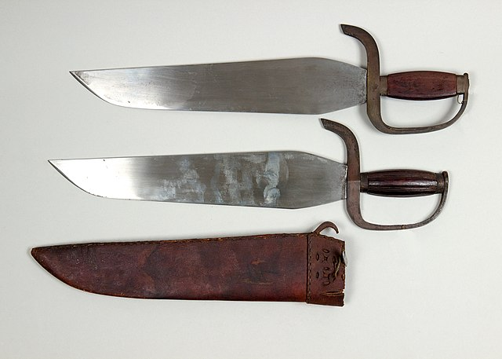
A butterfly sword is halfway between a knife and a sword. It has a distinct fat blade with a single edge. Butterfly swords are always wielded in pairs. Techniques with these swords involve a lot of flash and switching grips.
Deer Horn Knives
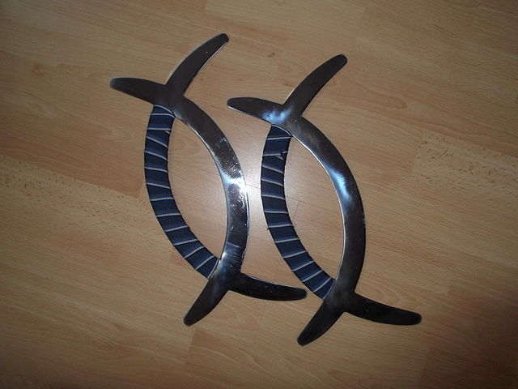
Deer horn knives are made by laying two metal crescents on top of one another. They are wielded in pairs. Their unusual shape makes them especially good at defending against larger swords.
Sai
The sai is a three-pronged fork-shaped weapon about the size of a dagger. Sai are wielded as a pair. Their unique shape makes them excellent at disarming foes. A manji is a sai where one side prong points forward and the other back. A jitte is a sai with a single side prong; the jitte is often carried as a weapon in places where more significant weapons are disallowed.
Short Sword
A short sword has a blade about 2 to 3 feet long. Short swords are the cheapest swords to manufacture and thus are often carried by soldiers.
Jian
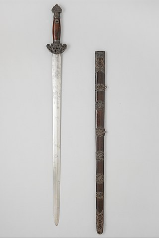
The humble and mighty jian is called the First Prince of Swords, the Noble’s Sword. The jian is one of the most ancient and respected weapons on the Blessed Isle. It is 24 to 28 inches long and wielded alone.
Sickle
A sickle is an agricultural tool for cutting grain. Sickles are rarely used as weapons except by desperate peasants.
Kama
The kama is a sickle crafted for war. Unlike a traditional crescent sickle, a kama has a blade that sticks out at a 90 degree angle to the handle.
Kusarigama
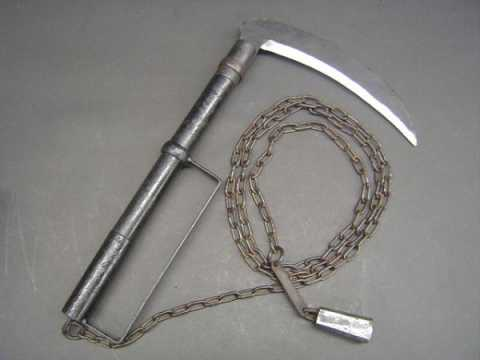
The kusarigama is a strange weapon resembling a sickle crossed with a fighting chain. The chain can be used alongside the blade. The kusarigama is a strange and exotic weapon.
Whip
A whip is usually just a simple coil of rope or leather or a length of cord. Most of the time a whip is meant to hurt rather than kill, but a skilled user can disarm foes and inflict great pain.
Urumi
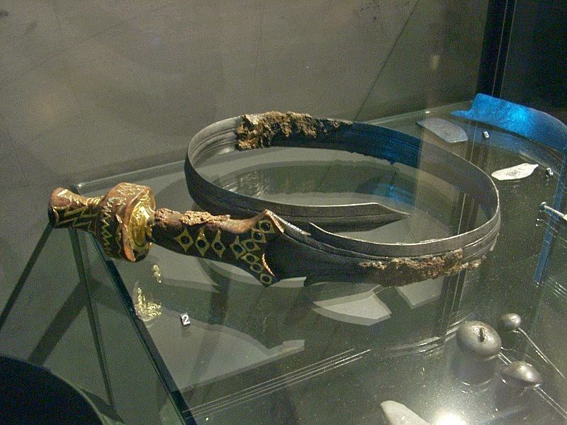
The urumi is a rare and strange weapon. It is essentially a sword crossed with a whip. The long, flexible steel blade is edged on both sides and very dangerous to the wielder. A few commentators have jokingly called it the Fourth Prince of Swords, the Lunatic’s Sword.
Medium Melee Weapons
Axe/Hatchet
The axe and the hatchet are broad-bladed weapons for use in one hand. The axe is cheap to manufacture and easy to use, so it has often been repurposed into a weapon of war.
Chopping Sword
A chopping sword is a longsword with a heavy chopping blade. It is made to hack through armor and bone.
Dao
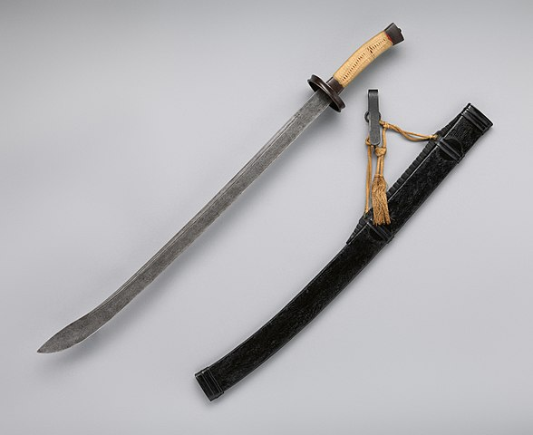
The dao is a simple broad saber. It is known as the Second Prince of Swords, the Soldier’s Sword. It often has a tassle or cloth attached to the handle for flourishes. A dao is also called a willow-leaf blade.
Ringed Broadsword
The ringed broadsword is like a dao, but slightly larger, heavier, and with a series of 7 to 11 rings on the trailing edge. It is particularly associated with pirates.
Javelin
The javelin is a small spear meant for throwing as well as personal use. They are cheap enough that they are often bought as sets.
Hammer or Mace
The hammer is another work tool sometimes turned into a weapon. Hammers are often wielded by bandits and thugs. Hammers made for fighting are often decorated.
Shield
It is never a bad idea to put some material between you and the person who wants to kill you. Some traditionalists view the shield as cowardly; these traditionalists often come to regret their belief.
Dhal
A dhal is a small buckler attached to the forearm, adorned with silver and gold. They are nimble and fast.
Bell Shield
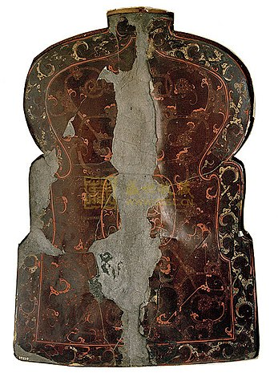
A bell shield is one of the standard pieces of equipment for Legionnaires in the field. It has a distinct bell shape that gives it its name.
Slashing Sword
A slashing sword is single-edged and made for smooth cutting motions.
Katana
Be the weeb of your dreams. Katana are often carried by Dynasts who want to show off their wealth and influence. It is known as the Third Prince of Swords, the General’s Sword.
Spear
The spear is one of the most basic and effective weapons in the world. It, along with a shield, is one of the Legions’ standard pieces of equipment. It is always a popular and respected choice of arm.
Crescent Spear
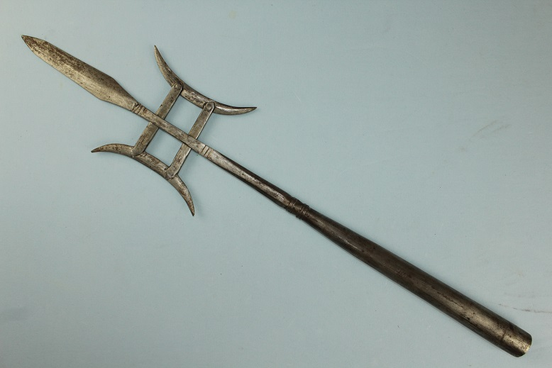
Most of the Realm’s spears are made in the crescent style. A crescent spear may have one or two crescents. These styles often also have a tassle or cloth attached near the point.
Podao
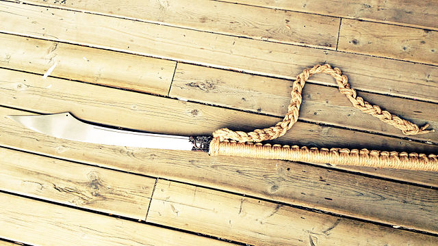
The podao is a cross between a sword and a spear. It is a long polearm about four to six feet long. Half the length is a long wrapped handle; the other half is a single-edged cutting blade.
Straight Sword
Well-balanced, accurate, and strong, the straight sword is a simple straight blade about 3 feet long. It is capable of deadly thrusts as well as slashing cuts.
Khanda
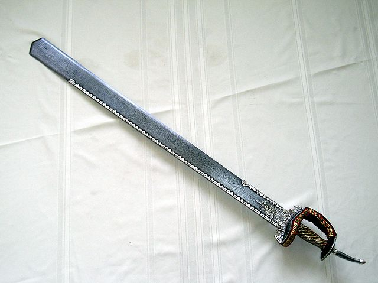
The khanda is a double-edged straight sword which fattens toward the tip. They often have a blunt rectangular edge instead of a point.
Pata
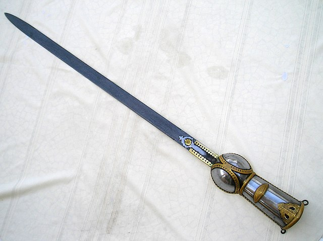
The pata is also called a gauntlet-sword. It is a straight sword mounted on the end of a gauntlet. While wielding a pata, the wrist cannot be bent, which lends it good power but poor stabbing.
Staff
The humble staff is a sturdy length of wood, sometimes wrapped with grips or banded in metal. An excellent defensive weapon, the staff can also be used to deliver a whoppin’ on a youngster who does not respect you.
Eku
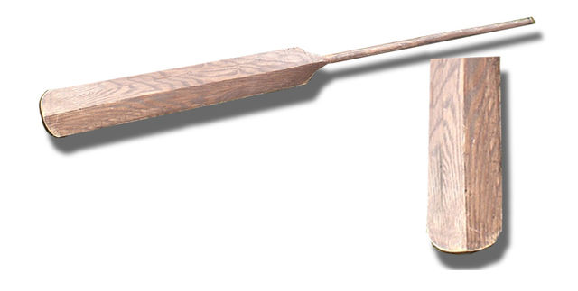
A truly unusual weapon for the Dynast looking to make a statement. The eku is a peasant weapon based on an oar. It is a long, skinny oar wielded like a staff.
Heavy Weapons
Great Axe
A great axe is a two-handed axe with a large, heavy head. It is a favorite among the Legion’s heavy auxiliaries.
Greatsword
A greatsword is a heavy two-handed sword. Greatswords are often used against cavalry.
Changdao
The changdao is a huge two-handed sword with a five foot blade, similar in profile to the dao broadsword. Like the dao, it comes in a ringed variant.
Nodachi
The nodachi is a huge sword made with the same techniques as the katana. It has an even larger cousin, the zanbato, with a blade six or seven feet long. Both of these weapons are dedicated anticavalry swords, for chopping the legs out underneath horses.
Lance
Also called a yari, a lance is a large two-handed spear designed to be used while riding. Lances are usually used to ride down infantry and sow chaos as part of a cavalry charge.
Poleaxe/Halberd
The poleaxe is to the spear as the greataxe is to the axe. Much cheaper than a greatsword, the poleaxe is the most common heavy weapon in Creation.
Guandao
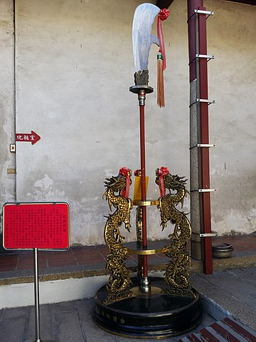
The guandao is a single-edged halberd, also called a reclining moon blade. The guandao is wielded with circular motions, and is one of the classic weapons almost every Dynast has handled.
Monk’s Spade
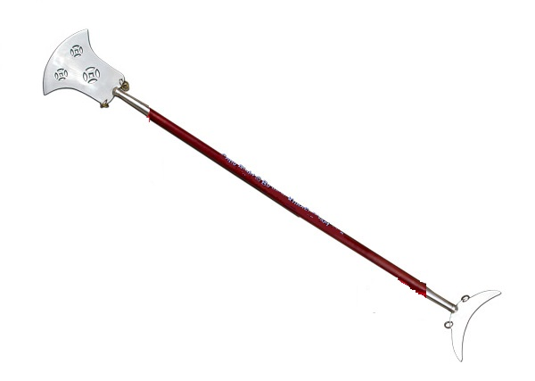
Also called the crescent moon spade, the monk’s spade is particularly associated with monks (unsurprisingly). The broad spade-like head is designed to push animals like dogs and leopards away without hurting them too badly.
Sodegarami/Tsukubo/Sasumata
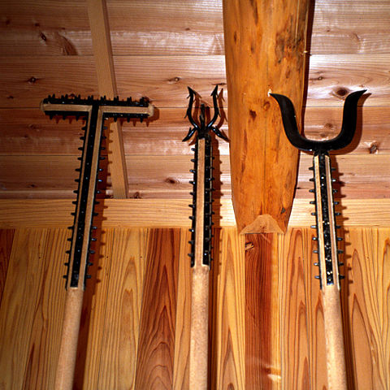
A class of man-catching polearms, these three weapons are essentially the same except for their head. These poles are designed to catch and entangle the target without killing them.
Scythe
A two-handed cutting implement used to collect grain, the scythe is also occasionally used as a weapon.
Sledge
The sledge is, in essence, a gigantic mass of wood and metal shaped so that it can be wielded like a hammer. This huge weapon is often wielded by gigantic bandits and Princes of the Earth with a reputation for physical strength.
Tetsubo
The tetsubo is a war club particularly associated with the Earth Dragon style. A long wooden shaft banded with metal and studs, the tetsubo crushes through armor and bone.